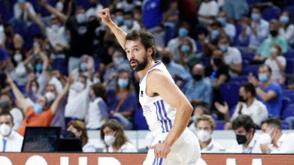

|  |
Olimpia Milan-Real Madrid: tough outing to close out Euroleague double-headerA huge clash between Real Madrid and Olimpia Milan on Euroleague matchday 15. Two days on from getting the week underway with a win over Alba Berlin at the WiZink Center on Tuesday, our team, who sit second in the table, will be seeking a thirteenth victory of the campaign against an outfit in the chasing pack with two fewer wins to date. |
|---|---|
Laso, 800 games as Real Madrid coachPablo Laso took charge of his 800th game for Real Madrid, when the Whites played Maccabi on round 13 of the EuroLeague. As of last season, he is the coach with the most games in the club's history and has won the most, in both cases ahead of Lolo Sainz. With today's win over the Israelis, Laso has now amassed a total of 619 victories, with a 77.3% win rate. His impressive track record includes 21 trophies in his 11 seasons as the team's coach. |
|
Chus Mateo: “We're solid and we want to keep on winningChus Mateo, who will be back coaching the team after Pablo Laso tested positive for COVID-19, and Walter Tavares, gave their thoughts on Real Madrid's visit to Olimpia Milan for the EuroLeague round 15 game (8:30pm CET). The assistant coach said: "They're a team with quality players like Sergio Rodríguez, Melli, Delaney, Shields, Hines... They're very well-balanced and have a lot of strengths, both defensively and offensively. We know that Milan is not an easy place to play. Their crowd gets behind them the fact they're playing a side immediately above them in the table will give them extra motivation. We have to be switched on and not lose our focus at any time". |